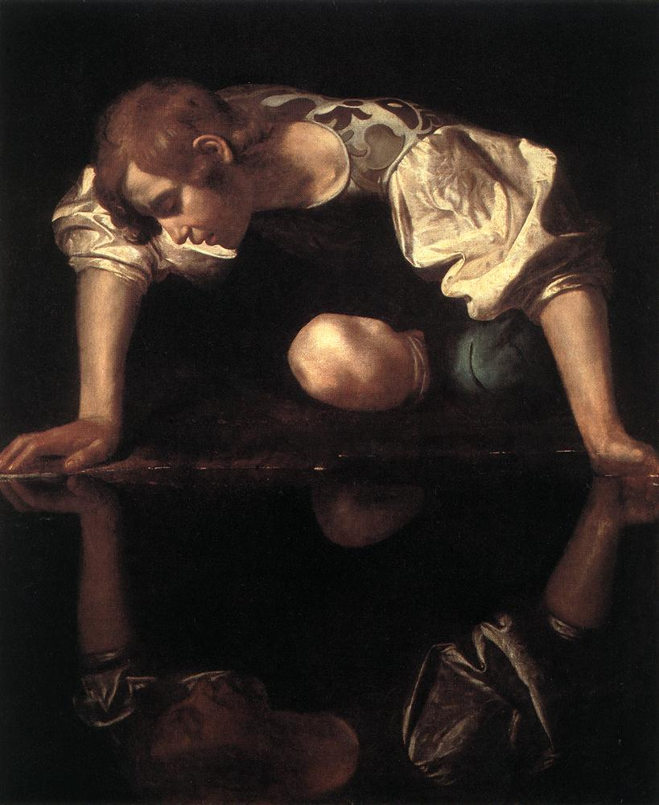

Attribuito a Caravaggio nel 1913 dal grande storico dell'arte Roberto Longhi, il Narciso rappresenta uno dei momenti più intimi e psicologici della prima maturità del pittore lombardo. Realizzato durante il soggiorno romano presso il Cardinale Del Monte, il quadro reinterpreta il celebre mito ovidiano spogliandolo di ogni elemento decorativo classico e immergendolo in una profonda oscurità teatrale.
Caravaggio costruisce una composizione geometrica rigorosa: la tela è divisa esattamente a metà orizzontalmente. La figura reale in alto e il suo riflesso speculare in basso formano uno schema rettangolare continuo, un cerchio chiuso che simboleggia l'incapacità del protagonista di uscire dal proprio egoismo.
Non c’è un paesaggio bucolico né la fonte d'acqua limpida descritta dai poeti classici. Lo sfondo è un buio pesto e impenetrabile. La luce drammatica colpisce le ampie maniche a sbuffo, il ginocchio nudo e il volto assorto, isolando Narciso dal resto dell'universo.
Particolare fondamentale è la mano sinistra affondata nell'acqua: nel momento esatto in cui cerca di toccare l'immagine amata, la superficie dell'acqua si increspa e l'illusione svanisce. È la resa dei conti tra l'inganno dei sensi e la tragica realtà.